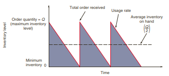
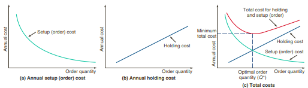

üìö KEGIATAN BELAJAR 1: Model Persediaan Independen
A. PENGERTIAN PERSEDIAAN
- Inventory is present in all service and manufacturing processes.
- In manufacturing, inventory consists of the components that make up the product being manufactured.
- In services, inventory may be used as part of the service delivery system (for example, disposable implements for a hospital operation), or it may be part of the tangible component of the service itself (for example, the brochure for a car insurance policy).
- A bank has methods to control its inventory of cash.
- A hospital has methods to control blood supplies and pharmaceuticals.
- Government agencies, schools, and, of course, virtually every manufacturing and production organization are concerned with inventory planning and control.
- Inventory is important because although it is necessary for customer service it can also be a major cost to the organization.
Persediaan adalah segala sesuatu yang disimpan untuk digunakan jika diperlukan
Fungsi Persediaan
- To provide a selection of goods for anticipated customer demand and to separate the firm from fluctuations in that demand. Such inventories are typical in retail establishments.
- To decouple various parts of the production process. For example, if a firm’s supplies fluctuate, extra inventory may be necessary to decouple the production process from suppliers.
- To take advantage of quantity discounts, because purchases in larger quantities may reduce the cost of goods or their delivery.
- To hedge against inflation and upward price changes.
Jenis-jenis Persediaan
- Raw material inventory has been purchased but not processed.
- Work-in-process (WIP) inventory is components or raw material that have undergone some
change but are not completed. WIP exists because of the time it takes for a product to be made (called flow time).
- Reducing flow time reduces inventory. Often this task is not difficult: during most of the time a product is “being made,” it is in fact sitting idle. As Figure 12.1 shows, actual work time, or “run” time, is a small portion of the material flow time, perhaps as low as 5%.

Sumber: Render, et.al. (2020)
MROs are inventories devoted to maintenance/repair/operating supplies necessary to keep machinery and processes productive. They exist because the need and timing for maintenance and repair of some equipment are unknown.
Finished-goods inventory is completed product awaiting shipment. Finished goods may be inventoried because future customer demands are unknown.
B. MODEL-MODEL PERSEDIAAN
- Inventory control models assume that demand for an item is either independent of or dependent on the demand for other items.
- For example, the demand for refrigerators is independent of the demand for toaster ovens.
- However, the demand for toaster oven components is dependent on the requirements of toaster ovens.
1. Model Kuantitas Pemesanan Ekonomis (Economic Order Quantity/EOQ)
- The economic order quantity (EOQ) model is one of the most commonly used inventory-control techniques.
- This technique is relatively easy to use but is based on several assumptions:
- Demand for an item is known, reasonably constant, and independent of decisions for other items.
- Lead time—that is, the time between placement and receipt of the order—is known and consistent.
- Receipt of inventory is instantaneous and complete. In other words, the inventory from an order arrives in one batch at one time.
- Quantity discounts are not possible.
- The only variable costs are the cost of setting up or placing an order (setup or ordering cost) and the cost of holding or storing inventory over time (holding or carrying cost).
- Stockouts (shortages) can be completely avoided if orders are placed at the right time.


Sumber: Render, et.al. (2020)
2. Model Diskon Kuantitas
- A quantity discount is simply a reduced price (P) for an item when it is purchased in larger quantities.
- Quantity discounts appear everywhere—you cannot go into a grocery store without seeing them on nearly every shelf.
- Researchers have found that most companies either offer or receive quantity discounts for at least some of the products that they sell or purchase.
3. Model Kuantitas Pemesanan Produksi
- An economic order quantity technique applied to production orders.
4. Model Probabilistik
- A statistical model applicable when product demand or any other variable is not known but can be specified by means of a probability distribution.
5. Model Simulasi
- Duplikasi atau tiruan terhadap karakteristik, fitur dan penampilan sistem yang nyata dengan menggunakan komputer
- dilakukan jika terdapat ketidakpastian dalam permintaan, waktu antara dan waktu pemesanan kembali